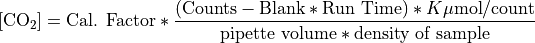

Dissolved Inorganic Carbon (DIC)¶
- PI’s
Rik Wanninkhof (NOAA/AOML)
Richard A. Feely (NOAA/PMEL)
- Technicians
Patrick Mears(NOAA/AOML)
Andrew Collins(NOAA/PMEL)
Sample collection¶
Samples for DIC measurements were drawn (according to procedures outlined in the PICES Publication, Guide to Best Practices for Ocean CO2 Measurements [Dickson2007]) from Niskin bottles into 294 ml borosilicate glass bottles using silicone tubing. The flasks were rinsed once and filled from the bottom with care not to entrain any bubbles, overflowing by at least one-half volume. The sample tube was pinched off and withdrawn, creating a 6 ml headspace, followed by 0.16 ml of saturated HgCl2 solution which was added as a preservative. The sample bottles were then sealed with glass stoppers lightly covered with Apiezon-L grease and were stored at room temperature for a maximum of 12 hours.
Equipment¶
The analysis was done by coulometry with two analytical systems (AOML 3 and AOML 4) used simultaneously on the cruise. Each system consisted of a coulometer (CM5015 UIC Inc) coupled with a Dissolved Inorganic Carbon Extractor (DICE). The DICE system was developed by Esa Peltola and Denis Pierrot of NOAA/AOML and Dana Greeley of NOAA/PMEL to modernize a carbon extractor called SOMMA ([Johnson1985], [Johnson1987], [Johnson1993], [Johnson1992], [Johnson1999]).
The two DICE systems (AOML 3 and AOML 4) were set up in a seagoing container modified for use as a shipboard laboratory on the aft main working deck of the R/V Thomas G Thompson.
DIC Analysis¶
In coulometric analysis of DIC, all carbonate species are converted to CO2 (gas) by addition of excess hydrogen ion (acid) to the seawater sample, and the evolved CO2 gas is swept into the titration cell of the coulometer with pure air or compressed nitrogen, where it reacts quantitatively with a proprietary reagent based on ethanolamine to generate hydrogen ions. In this process, the solution changes from blue to colorless, triggering a current through the cell and causing coulometrical generation of OH- ions at the anode. The OH- ions react with the H+ and the solution turns blue again. A beam of light is shone through the solution, and a photometric detector at the opposite side of the cell senses the change in transmission. Once the percent transmission reaches its original value, the coulometric titration is stopped, and the amount of CO2 that enters the cell is determined by integrating the total change during the titration.
DIC Calculation¶
Calculation of the amount of CO2 injected was according to the CO2 handbook [DOE1994]. The concentration of CO2 ([CO2]) in the samples was determined according to:

where Cal. Factor is the calibration factor, Counts is the instrument reading at the end of the analysis, Blank is the counts/minute determined from blank runs performed at least once for each cell solution, Run Time is the length of coulometric titration (in minutes), and K is the conversion factor from counts to micromoles.
The instrument has a salinity sensor, but all DIC values were recalculated to a molar weight (µmol/kg) using density obtained from the CTD’s salinity. The DIC values were corrected for dilution due to the addition of 0.12 ml of saturated HgCl2 used for sample preservation. The total water volume of the sample bottles was 305.55 ml (calibrated by Dana Greeley, AOML). The correction factor used for dilution was 1.0004. A correction was also applied for the offset from the CRM. This additive correction was applied for each cell using the CRM value obtained at the beginning of the cell. The average (± SD) correction was 5.5 ±1.21 µmol/kg for AOML 3 and 1.3 ± 1.53 µmol/kg for AOML 4
The coulometer cell solution was replaced after 25 – 28 mg of carbon was titrated, typically after 9 – 12 hours of continuous use. The blanks ranged from 12-28.
Calibration, Accuracy, and Precision¶
The stability of each coulometer cell solution was confirmed three different ways.
Gas loops were run at the beginning of each cell
CRM’s supplied by Dr. A. Dickson of SIO, were measured near the beginning; middle and end of each cell
Duplicate samples from the same niskin were run throughout the life of the cell solution.
Each coulometer was calibrated by injecting aliquots of pure CO2 (99.999%) by means of an 8-port valve [Wilke1993] outfitted with two calibrated sample loops of different sizes (~1ml and ~2ml). The instruments were each separately calibrated at the beginning of each cell with a minimum of two sets of these gas loop injections.
The accuracy of the DICE measurement is determined with the use of standards (Certified Reference Materials (CRMs), consisting of filtered and UV irradiated seawater) supplied by Dr. A. Dickson of Scripps Institution of Oceanography (SIO). The CRM accuracy is determined manometrically on land in San Diego and the DIC data reported to the data base have been corrected to this batch 178 CRM value. The CRM certified value for this batch is 1952.62 µmol/kg.
The precision of the two DICE systems can be demonstrated via the replicate samples. Approximately 11.3% of the niskins sampled were duplicates taken as a check of our precision. These replicate samples were interspersed throughout the station analysis for quality assurance and integrity of the coulometer cell solutions. The average difference for these duplicates on AOML 3 and 4 respectively are 1.45 µmol/kg and 1.45 µmol/kg - No major systematic differences between the replicates were observed.
The pipette volume was determined by taking aliquots of distilled water from volumes at known temperatures. The weights with the appropriate densities were used to determine the volume of the pipettes.
Calibration data during this cruise:
UNIT |
L Loop |
S Loop |
Pipette |
Ave CRM1 |
Std Dev |
Dupes |
|---|---|---|---|---|---|---|
AOML3 |
1.002012 |
1.002196 |
28.003 ml |
1946.80, N= 41 |
1.21 |
1.45 |
AOML4 |
1.00442 |
1.00420 |
29.3888 ml |
1952.36, N= 35 |
1.53 |
1.45 |
Underway DIC Samples¶
Underway samples were collected from the flow thru system in the Hydro Lab during transit. Discrete DIC samples were collected approximately every 4 hours with duplicates every fourth sample. A total of 89 discrete DIC samples including duplicates were collected while underway. The average difference for replicates of underway DIC samples was 1.18 µmol/kg and the average standard deviation was 0.91.
Summary¶
The overall performance of the analytical equipment was good during the cruise. On two occasions the air supply was unexpectedly reduced to the van. Steps were taken to prevent any issues with samples being run. During the running of samples for station 8, an unknown issue prevented the pipette from fully filling during several bottle runs. It is unknown as to what caused this to occur however, it passed without discovering the cause.
Including the duplicates, 1,561 samples were analyzed from 55 CTD casts for dissolved inorganic carbon (DIC) which means that there is a DIC value for approximately 82% of the niskins tripped.The DIC data reported to the database directly from the ship are to be considered preliminary until a more thorough quality assurance can be completed shore side.
- DOE1994
DOE (U.S. Department of Energy). (1994). Handbook of Methods for the Analysis of the Various Parameters of the Carbon Dioxide System in Seawater. Version 2.0. ORNL/CDIAC-74. Ed. A. G. Dickson and C. Goyet. Carbon Dioxide Information Analysis Center, Oak Ridge National Laboratory, Oak Ridge, Tenn.
- Dickson2007
Dickson, A.G., Sabine, C.L. and Christian, J.R. (Eds.), (2007): Guide to Best Practices for Ocean CO2 Measurements. PICES Special Publication 3, 191 pp.
- Feely1998
Feely, R.A., R. Wanninkhof, H.B. Milburn, C.E. Cosca, M. Stapp, and P.P. Murphy (1998): “A new automated underway system for making high precision pCO2 measurements aboard research ships.” Anal. Chim. Acta, 377, 185-191.
- Johnson1985
Johnson, K.M., A.E. King, and J. McN. Sieburth (1985): “Coulometric DIC analyses for marine studies: An introduction.” Mar. Chem., 16, 61-82.
- Johnson1987
Johnson, K.M., P.J. Williams, L. Brandstrom, and J. McN. Sieburth (1987): “Coulometric total carbon analysis for marine studies: Automation and calibration.” Mar. Chem., 21, 117-133.
- Johnson1992
Johnson, K.M. (1992): Operator’s manual: “Single operator multiparameter metabolic analyzer (SOMMA) for total carbon dioxide (CT) with coulometric detection.” Brookhaven National Laboratory, Brookhaven, N.Y., 70 pp.
- Johnson1993
Johnson, K.M., K.D. Wills, D.B. Butler, W.K. Johnson, and C.S. Wong (1993): “Coulometric total carbon dioxide analysis for marine studies: Maximizing the performance of an automated continuous gas extraction system and coulometric detector.” Mar. Chem., 44, 167-189.
- Johnson1999
Johnson, K.M., Körtzinger, A.; Mintrop, L.; Duinker, J.C.; and Wallace, D.W.R. (1999). Coulometric total carbon dioxide analysis for marine studies: Measurement and interna consistency of underway surface TCO2 concentrations. Marine Chemistry 67:123–44.
- Lewis1998
Lewis, E. and D. W. R. Wallace (1998) Program developed for CO2 system calculations. Oak Ridge, Oak Ridge National Laboratory. http://cdiac.ornl.gov/oceans/co2rprt.html
- Wilke1993
Wilke, R.J., D.W.R. Wallace, and K.M. Johnson (1993): “Water-based gravimetric method for the determination of gas loop volume.” Anal. Chem. 65, 2403-2406